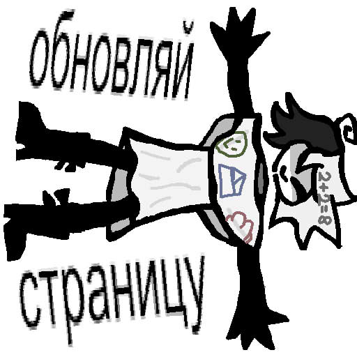

Ранее школьное утро, да настолько, что даже свет едва пробивал в коридоры здания. Настоящая тьма, по которой уже передвигалось несколько учеников — самых ранних пташек. Среди них проглядывались слипавшиеся глаза Энгеля, не спавшего всю ночь ради подготовки к контрольной, Зип — только вынырнувшей откуда-то из кабинетов, что вообще не спала этой ночью, да и Эдвард — с усталой, чуть зубастой лыбой сонного инженера метался туда-сюда.
Коридор был большой, просторный, но это никак не мешало последнему ударяться лбом о каждый стоящий шкафчик, что вызывало длинное гудящее "бум-с-с-с", после которого всегда следовал писклявый смех наблюдающей за ним Зип. Девушка решила приблизиться поближе, но всякий раз останавливалась и прикрывала рот руками да зажмуривала глаза от хохота — "бум-с-с-с", чуть паузы, новый "бум-с-с-с", и так далее, пока живот последней не лопнул бы от гогота. К счастью, сам же объект истерического смеха решил развернуться и, завидев подругу, так издевальчески ржущую над его глупым видом, решил подойти. Резко приставив указательный палец ко рту девушки, невнятным полусонным рыком заявил:
— Заколебёшь уже... — громоздко донеслось у него из-под приопущенной от усталости головы, но спустя пару секунд та поднялась вверх. Для Зип открылся чудесный вид на самую сонную мордашку, которую она когда-либо видела: выглядывающий из-под пряди волос глаз, недовольно прячущийся от любого источника света и лёгкая улыбка, которая от вида умилившейся девушки перед собой стала чуть более угрюмой.
— Бук, — Зип скоростным движением тыкнула Эдварду пальцем промеж глаз и отпрыгнула назад, прежде чем испустить новую волну хохота, — Не спать, Эдди! Нельзя!
— Грх! — лицо парня скривилось в непонимании, а затем в яркой злобе. Он чуть отпрянул назад, проморгался и, когда понял, что девчонка ему ничего не проткнула — ръяно кинулся на неё с кулаками, задрав высоко голову. Желание спать сразу выветрилось, сменившись лишь одной целью: — Я тебе сейчас-с лицо сломаю... бумажная с-сучка!
— Пха, какой злюка, я в шоке! — параллельно со словами, девчушка всё поддразнивала разозлённого друга неприличными жестами в его адрес, а также, внезапно для Эдварда, его же очками. Только теперь, вместо того, чтоб находиться на родной макушке, те лежали в шаловливых ручках этой мелкой хулиганки! Он такое никому не прощал (особенно до жути усталый)!
— К-когда ты... — сразу часть злости перелилась в удивление и парень на пару моментов встрял на месте, прощупывая когтистой лапой отсутствие окуляров, а после, совсем ошалевший, но не забывший обиду, вновь кинулся на Зип уже не просто с кулаками, а с острющими когтями (которые в рабочее время ему заменяли ножницы)! — Ты заебёшь меня уже! Отдай мне их!
— Ой-ой-ой, матершиник! Фу тебе, а не очки! — едко начала та, глядя презрительно-насмехающимся взглядом на взбешённого демона. Конечно-же, она в то же время уносила ноги подальше отсюда, а вот куда уже было мало важно для неё, главной целью было оторваться от съехавшего с катушек после затяжной рабочей ночки одноклассника!
Ботинки метались со скоростью света, чёрные следы, как от тормозов автомобиля, были доказательством этому. Как и постоянный свист, грохот и прочие звуки, издаваемые во время усердной, вполне серьёзной погони по всей школе. В конце концов, силы начали подводить двух бегунов — у Эдди заканчивалось бушевание адреналина в крови, что означало скорое падение лицом в плитку, а Зип просто выдохлась и уже готова была первая остановиться, чтобы вразумить друга парочкой колких пощёчин, но только, уже притормаживая, возникла маленькая потеря равновесия, что повлекла за собой...
*БАХ!*
Один из ботинок неожиданно преземлился в выбоину в полу, оставленную ранее шайкой школьных хулиганов (кем же, интересно :D). Нога подвернулась, раздался тихий, но проницательный хруст где-то в лодыжке — а там уже Зип, стараясь не упасть лицом в пол, как было вообще-то предсказано Эдварду, с помощью второй ноги сумела оттолкнуться в другую сторону, ближе к дверям кабинетов. Её корпус удивительно крутанулся вокруг своей оси, пока руки-бумажки мельтешили по воздуху, задевая всё, что только можно.
И вот, с криком "ТВОЮ МАТЬ!!!" — та окончательно теряет равновесие и опрокидывается всем телом на пол. В ушах всех, ходящих по коридору в данный момент раздался писклявый, сдавленный крик Зип — всё, что она могла выдавить из себя вкупе с вышенаписанным ругательством. Секунда ужаса, сожаления о том, что эта глупая пробежка вообще состоялась, а также... чей-то ещё вскрик?
Она ударилась обо что-то громоздкое, но не такое твёрдое и грубое, как стена или дверь — в сию же секунду это "что-то" само подскользнулось, потеряло равновесие и упало на пол в тандеме со школьницей. Болевой шок не дал сразу разобрать, что произошло, но падение показалось очень даже ничего — как в кровать завались, но, наверное, без матраса.
— Ау-у-уй! Бож-же! С-сука! — моментом тело девчули заполонилось колющей болью, вдарившей по мозгам не хуже того самого раза, когда Зип решила в шутку подкатить к Оливеру на глазах у Алисы. Хотя, последнее всё же было пострашнее.
Ноги с руками согнулись, пытаясь так, наверное, утихомирить боль, но ничего не получалось. Колени и, в особенности, неудачно поставленная нога, из-за которой и прозошло падение, истерически загудели и, по ощущениям, готовы были в любой момент взорваться от закипающей внутри них крови. Голова отключилась от всего происходящего: от погони, от задирок над Эдвардом и от утреннего желания поспать ещё пять минуток. Это всё пропало и сменилось ужасной дрожью по каждому кусочку тела, что не позволяла ни дышать, ни слова осознанного обронить.
И этого будто было мало — что-то резким движением и без какого-либо милосердия спихнуло в сторону девочку, отправив перекатываться через весь коридор до ближайшего шкафчика. Импакт оказался таким сильным, что Зип даже не успела осознать, что с ней произошло: головокружительное путешествие в соседнюю стену закончилось, если не брать в расчёт подступившую тошноту, звонким ударом об приоткрытую дверцу чьего-то шкафчика. Его же владелец, стоящий рядом и украдкой наблюдавший за всей картиной, к счастью, успел отпрыгнуть в сторону — иначе же, тот грохнулся бы в порядке домино на Зип, и ситуация показалась бы ну слишком заурядно-ироничной.
Зип вздрагивает, как только чувствует острое покалывание в районе живота, что после едва не сменяется на крик, как только она ощущает тепло, быстро покрывающее всё тело. Это тепло, скорее даже жар, у девушки вызвали ощущение активной кровопотери, от на душе стало совсем мрачно.
Начали проникать полубредовые мысли: как та начинает плюваться кровью, а под ней, в том числе и во время катания через весь холл образуется неприятно-большая лужица крови.
А что там Эдвард? А что там проходимец, на кого свалилась эта кучка несчастья под именем "Зип"? Мысли тревожились от осознания своей беспомощности: вдруг те подбегут, будут кричать — но уши пострадавшей будут глушить всё, кроме пульсирующей боли, — и напинают берцоподобными ботинками, что есть сил.
Даже не раздумают, перед тем, как ударить, в ходе чего зальют и себя, и весь холл, и весь пол со стенами и шкафчиками кровью девушки — изобют до разломанных костей, растопчат и с корнем вырвут хвост, выбьют глаза из черепной коробки, заставив их висеть на двух крохотных нервах — сделают такое, что никто больше не опознает её! И только потом аффект спадёт, но будет уже поздно, ага!
Жалкое зрелище — обезображенный труп, из которого пинками выпнут кишки через рот, а потом уйдут и так всё и закончится. И для Зип это будут не мгновения, а целые часы, пока жизнь будет последними толчками сердца покидать её, пока в итоге, под покровом бурного школьного дня какая-нибудь Мисс Сёркл, проходя мимо окровавленной сцены с недвижимым телом посередине, не решит проявить милосердие...
*ХРУСТЬ!* — разорвав девушку напополам, набив после обмякшими кусками плоти своё голодное чрево. Жестоко, но на этом хотя-бы закончится страдание; такое глупое и случайное происшествие, обернувшееся в незавидную судьбу школьной хулиганки Зип...
***
— ЗИП!!! Зип, якорь тебе в глотку, ОЧНИСЬ!!! — именно с этим голосом сознание возвращалось из мира мёртвых. Разворошенный похуже, чем утром, помрачневший в наворачивающихся слезах Эдвард кричал прямо над головой девушки. Цепкие лапки обволокли её плечи, трясли и дёргали, всё никак не унимались. Лезли по самую душу, тянули к свету, точнее, к жужащей лампе в полуметре над головой.
— НЕТ, ТОЛЬКО Н-НЕ ЯКОРЬ!!!! — девушка, вставая из мёртвых, чуть ли не вскакивает из-за кровати и, давясь воздухом, закрывает руками своё лицо. Обжигающий пот ручьями стекал по бумажному телу, создавая странную, не виданную никогда ранее картину для Эдварда: Зип, закутанная в мокрые, по самое не балуй бинты, истерично прикрывается руками, пока в её разбитых, налитых кровью глазах виднеется абсолютный хаос и неразбериха....
ZIP.archive

В комнате до пробуждения девушки стояла тишина, прерываемая выкриками Эдварда, но теперь было абсолютно тихо. И в этой тишине слышно было глубокое, давящееся в панике дыхание Зип — каждый вдох и выдох давались с таким неожиданным наслаждением, какого никогда не испытывала девушка. Сознание той не могло понять, что творится вокруг неё: сон? жизнь? бред?
Однако, приходящие в реальность чувства, среди которых была и бьющая в кости боль, сделали своё дело. Хулиганка, вверх выгнувшись, словно из неё выходит душа, жутким воплем вскрикнула — но страдания не пропадали с криком, как обычно бывало; ясность приходила — они крепчали, начиная с самых позвонков, заканчивая кончиками пальцев.
Сердце, как и руки с ногами, как и все мышцы, кости — горели жгучим пламенем, словно их по частичке, каждый орган и кусок плоти прижигали к телу Зип после ужаса в коридоре. Мысли о том, что всё может повториться, заставили пострадавшую с пеной у рта начать импульсивно царапать себя и койку под собой. Млеющий от ужаса Эдвард схватил одну из рук подруги, но та начала царапать и его:
— ДА ЧТО ЗА ХУ-
— ЭД-ДВАРД, ПР-РОСТИ!! НЕ НАДО!!! — отстранившись в сторону, та сразу обняла себя руками, мигом вжалась в кровать в позе эмбиона, как тогда, в свои последние минуты. Зубы затрещали от осознования того, что сейчас её снова могут избить, а мозг той будто бы вообще отключился, — НЕТ!!!
И, в итоге, перед ошарашенным Эдвардом и парочкой фигур в помещении находилась взъерошенная, тонущая в бреду про собственную гибель, дрожащая, будто через тело той проводили высоковольтные провода, Зип.
Видя психоз своей подруги, юный инженер сделал несколько шагов назад, облокотился руками об позади стоящий столик и испуганно таращился на неё. Сердце того усиленно тонуло в чём-то склизком и мрачном, пока тот продолжал смиренно глядеть в сторону койки. Все слова давно застряли в горле, а максимум, чем он мог бы помочь ей — позвать взрослых.
К счастью, они уже находились в медкабинете, а точнее одна взрослая, зато профессионал своего дела — Мисс Йорк. Слишком гордая, чтобы часто появляться в школе, зато умная и всегда невозмутимая, что частенько принимается всеми за её некомпетентность. Впрочем, она и никогда не спорит.
Появившись из-за спины демонёнка со своей всеми знакомой папкой-планшетом, в котором она чиркалась от скуки большую часть времени, взгляд её пал строго на источник шума в кабинете — Зип. С каждым вскриком и ударом ботинком той об выпирающее металлическое изножье койки, врач всё больше скалилась, всё больше начинал подёргиваться её глаз. Тут она приспускает голову к Эдварду и тот, заикаясь, пытается объясниться:
— Она б-бежала и после-
— Сошла с ума? — совершенно серьёзным тоном перебивает Йорк, прерывисто вздыхая. Тут же она поддаётся вперёд, к частично прикрытой одеялом девушке, легко возражает, обращаясь к ней, — Симулируешь?
Но Зип не ответила, скорее всего даже не слышала. Руки той обхватили плечи, ноги поджались под друг дружку а хвост, казалось, сейчас продолбит в стене дыру в соседнюю комнату. Невооружённым глазом из-под опущенного лица было видно несколько проскользнувших слезинок, а глаза, из которых те выкатывались, то судорожно сжимались, то разжимались вновь.
Врач глядела на неё с некоторым подозрением, присматривалась к деталям и не особо спешила что-либо делать, что заметил Эдвард. Тот подбегает сзади, скулит что-то шёпотом и дёргает женщину за рукав несколько раз, прежде чем более внятным и собранным тоном попросить её:
— Да не симулирует она! Она никогда т-так не делала... помогите ей!
— Я бы помогла, чем смогла, но... — вдруг голова врача с едва слышимым хрустом опускается строго на ученика, брови той вдруг захмурились, как и лицо, вкупе с жутковатой, совершенно разочарованной просьбой мальчика физиономией. Две руки той упрямо складываются вместе, пока зрительная экзекуция лишь наостряется, — Но какая-то шайка бездельников украла все мои препараты вчерашней ночью, поэтому, Эдвард, мне нечего дать твоей подружке.
Опустив голову в сторону от нахлынувшего стыда, тот чувствует всем спинным мозгом, как ворошит его цепкий взгляд Мисс Йорк — и глубоко вздыхает, стараясь не глядеть и не думать о судьбе Зип, ибо от этого становилось только страшнее. Пускай и Эдди считал плачь пристрастью слабаков, но одна самая мысль — мимолётное воспоминание со вчера — заставила его испустить отчаянно тихий болезненный стон, после которого на плитке под ногами образовалось несколько прозрачных горьких лужиц...
***
"Под покровом ночи, легко вломившись в один из незакрытых по чей-то глупости кабинетов, лёгкомысленная банда воришек разделилась на три части: "Прохвост" Оливер начнёт с подсобки, "Трикстер" Зип со шкафов и ящиков на входе, а "Ворюга", роль которого играл Эдвард — с каких-то дальних непримечательных пластиковых коробок на койке.
— Так, банда, рвём куш быстро, метко, чётко. Всё собрали — по съёбам отсюда и врассыпную! — крутым тоном диктовал главный зачинщик всего дела, стараясь пародировать героев крутых фильмов. Зип, сразу забравшаяся на шкаф, как скалолаз, одобрительно похлопала в ладоши простому, но гениальному плану Оливера.
— Ты имеешь в виду по комнатам? — спросила та, усаживаясь поудобнее на шкафу, — Или ты будешь со своей... этой... Алиской?
— Ебало, Зип, — тон главаря показался зловещим, чуть недовольным, может, даже больше, чем ожидала девушка.
— А что там у вас такое серьёзное? Что аж рассердил-
— Зип, завали своё ебало и обыскивай этот шкаф. Тебя я сюда взял чисто из жалости, так что если будешь выёживаться, то вылетишь нахуй! — голос того показался совсем рычащим, что аж Эдвард передёрнулся и с лёгкой нервной улыбкой взглянул на Зип, типа "не начинай".
— Ну... ну ладно. Только я себе всё забираю, что найдём, — чуть более сдержано сказала та, одной рукой нащупав на самой высокой полке несколько прозрачных колбочек и шуршащих упаковок чего-то.
— Ну, ага, конечно! — совсем возмутился Оливер, вдруг бросив в сторону той что-то стеклянное, что он только что вытащил из подсобного помещения. Это что-то пролетело со свистом три метра, ударилось об угол шкафа и разбилось, что девушка аж пошатнулась и чуть не грохнулась от испуга, — Помечтаешь об этом, когда спать будешь!
Парень ой как любил лидерствовать, и делал это всегда, в том числе в кругу лучшего друга и Зип. И последняя глупо надеялась, что после этой ходки у неё останется хоть что-то с собой, но, конечно, исход был всегда один, даже для Эдди — максимум, что досталось бы ему, так это какая-нибудь треснутая лупа. Остальное же — таблетки, баночки со штучками, медприборы и проча интересная хурма всегда переходила под владение Оливера. А вот Зип сегодня однозначно обрела себя на уход с пустыми руками...
— О, смотрите, обезболивающее и... успокоительное! — резко восклицает демон-инженер, подняв в воздух соответсвующее баночки. В глазах всех в помещении мелькнул огонь наживы, и тут же их поиски продолжились в разы усерднее, пока, уже под утро, вся троица не уметнулась домой. Конечно же, склады Оливера пополнились кучей интересного, в то время как другие подельники остались с носом"
***
"Умолчал бы я о таблетках... — тревожно возникло у него в голове, руки потянулись к волосам, нервно хватая и распушивая их, — Бляха... Зип... И Оливер... Скотина ты!"
Тем временем врач устало вздыхает ещё разок, потягивается и, в конце концов, покидает кабинет с беззаботым хлопком дверцы, да так спешно и незаметно, что Эдвард несколько секунд оглядывался по сторонам, дабы понять, что теперь он один на один с...
— Пож-жалуйста, я верну очки, верну, верну, верну, только н-не делай этого!! — рычала в подушку девица, уже, конечно, чуть поспокойнее, но не менее страшно, — Нет, не-ет, я... я...
— Зип! — парень подоходит неуверенно, но опускаясь на колени, чтобы быть ближе к подруге, показывает все свои переживания по поводу неё и старается успокоить, — Зип, плевать мне на очки, ты слышишь меня? Зи-и-ип?
Девчонка продолжает дрожать всем телом, перекатывается с одного бока на другой. Но увидев и услышав знакомый голос, пытается сфокусироваться на фигуре над собой. Видя пару совсем-совсем близких сострадательных глаз, наполенных не желанием убить и разорвать на части, а страхом и переживанием, какие таились прямо в ней сейчас, тихим, неуверенным шёпотом спрашивает куда-то в пустоту:
— Эдди?
— Зип!
Чуть волнительной паузы, их глаза снова пересекаются:
— Эдвард?
— Зи-ип!
Странно переглядываясь между собой в течении нескольких секунд, те мало что понимали, что продолжали, тем не менее. Инженер наконец-то мог относительно спокойно выдохнуть, ибо его подруга с каждым произношением его имени всё больше затихала, а дрожь, так сильно напоминавшая припадок от чего-либо, угомонилась — хороший признак продолжать... чем бы это не было.
— Зи-и-и-п! — размашисто протянул Эдвард, положив руки на плечи девчонки. Тёплыми прикосновениями тот провёл по её ключице, пальцами легонько дотрагиваясь до её шеи: так он хотел успокоить её переживания... но отсутствие реакции у той чуть пугало, поэтому он отдёрнул руки, — Зип?
— Йорк!
— Зи... Стоп, кто?
Эдвард видит странную, тучную тень, выходящую откуда-то со спины и то, что пострадавшая стойко вцепилась взглядом за спину героя. Позади, из-за плеча доносится тяжёлый вдох, стук нескольких тяжёлых каблуков обрывает всю мелодраму — кажется, за ними следили. Тут же что-то толкает инженера в сторону, но не настолько опрометчиво, чтобы тот упал.
Большое железное ведро с громыхающей ручкой надвисло дамокловым мечом прямо над головой Зип. Та замерла в оцепенении, видя страшный, скалящийся лик местного доктора — и тут же, как в посмертный час, обрушивается всё ведро с ледяной водой на бедную девчушку! Холодные потоки полностью окунают её, обжигают, но пробуждают от всякой дури, как не в себя!
— Какого хера вы творите?! — сжав кулаки от накапливающейся ярости, прорычал Эдди. Новая волна (каламбурчик :0) крика прокатилась по комнате, но на этот раз Мисс Йорк ни чуть не смущалась этому. Наоборот — глянцевая улыбка твердила, что всё идёт более, чем по её хитровымудренному плану!
Зип в ужасе растопырила зраки, кашель шёл из глубин её лёгких, докудова попала вода, а чёрно-белая чёлка расплылась мокрым безобразием по подушке. Но как только тело привыкло к холоду, то Зип стала удивительно спокойной и сдержанной, по сравнению с минутой ранее. Травмирующие воспоминания, надуманные ей же, чудом исчезли с её уже больше шокированной, чем напуганной мордачки.
— Я нашла лекарство! — радушно констатировала Йорк, откинув ведёрко в сторону с его опустошением. Вся кровать, пол и, конечно, неудачливая школьница были залиты полностью, а со временем на лице женщины вновь образовалась собранная, строговатая мордашка, — А теперь валите отсюда, хулиганьё.